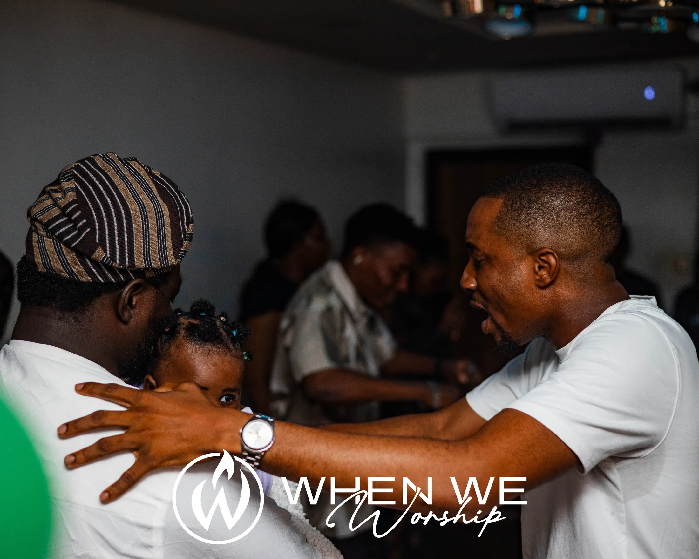

Make Room
What happens when we create space to listen before we rush to answer.
Read / Watch →TAKE IT WITH YOU
Thoughts, prayers, songs and Scripture to help you carry the life of the Parlor into everyday life.
MESSAGES
What happens when we create space to listen before we rush to answer.
Read / Watch →Moving from performing for God to becoming attentive to God.
Read / Watch →Why Christian community requires more than being in the same room.
Read / Watch →DEVOTIONALS
Short devotional reflections designed to be read slowly. Scripture, prayer and one thought to carry into the day.
Explore DevotionalsPRAYER
Use these simple prayer prompts before, during or after your next quiet time.
Prayer Guide
Pause. Breathe. Read John 15 slowly. Stay with one phrase that catches your attention.
RECOMMENDED BOOKS
A collection of books and resources we return to often.
RECOMMENDED READING
Kenneth E. Hagin
Roberts Liardon
Lester Sumrall